questionmark.com is an assessment solutions company.
Their website is a large Drupal website, with 400+ modules, 8000+ pages, running on Azure and SQL Server, with corporate-grade search engine using Solr.
Featured work (Drupal):
Database-driven using SQL Server.
CRM Integration with Microsoft Dynamics 365.
Development of Drupal modules, Wordpress plug-ins, and theme.
marvinsommers.com is a local realtor company owned by real estate agent, Marvin Sommers.
Slicing, Coding, and Development of the website on latest Joomla
and custom template.
Featured work (Joomla):
Semantic Markup, Clean Styling, and SEO
Plugins for slideshows, and videos.
Custom listings system.
Virtual tour system.
Responsive design.
ToolSafe Products
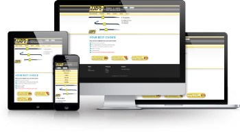
toolsafeproducts.com is a canadian company that provides safety devices for heavy hand-held
tools. Slicing, Coding, and Development of the website on Joomla
and custom template.
Featured work (Joomla):
Semantic Markup, Clean Styling, and SEO
Plugins for slideshows, and videos.
Responsive design.
Web Education Training
webeducationtraining.com
is a private website for members (who have purchased the training
product) to login and access web training resources. Running on the
latest Joomla, with custom login system that connects to a custom
3rd-party API.
Featured work:
HTML 5/CSS 3 & Cross-browser compatible.
Cross-device compatible (Mobile).
Powered by technologies such as the Twitter Bootstrap, jQuery,
etc.
Various scripts for accordion sliders, video players, popups,
and more.
Complete slicing/coding of a 6-page long template, including scripting
for certain parts.
This large (and unique) design was sliced/coded in under 3 days. Even
with a base bootstrap (Twitter Bootstrap), there is still an additional
800+ lines of CSS code to this project.
Futhermore on code (line count), there are also (close to) 800 lines
of hand-crafted (high-quality) HTML code as well.
Although the "Inspect Checklist" section is removed (from the design),
the HTML(Semantic) markup (code) is still there, hidden (commented).
Unfortunately the budget (for this project) did not allow for this page
to be responsive/cross-device compatible (Mobile). It is indeed cross-browser
compatible (down to IE7), though. But, Twitter Bootstrap currently
has plans to discard IE7-support, very soon now.
Featured work:
HTML 5(and Semantic Markup)/CSS 3(Clean), and jQuery/scripting.
CSS 3 features, such as rounded-corners, box-shadows, text-shadows,
dual-backgrounds, etc.
Well named/structure class named blocks, allowing for quick re-usability/flexibility
to add onto the design/page.
Cross-browser compatible. (Browser-detect script)
Powered by technologies: Twitter Bootstrap, Bootstrap-slider,
Grid, etc.
Custom scripting for adjusting the functionality and interactivity
of dropdown buttons (from Twitter Bootstrap) to act like
Select form fields.
Custom styling of form elements (dropdowns) to match design.
Using tables (Semantic markup) for all portions of tabular data.
Using background-images for all images/icons/indicators.
Absolute-positioning for layered div (effect) layouts.
Flexible/dynamic.
1800 Accountant
1800accountant.com redesign.
Website Features:
High-end Slicing, Markup & Styling (HTML 5/CSS 3)
Form Validation & Scripting
Custom-polyfill technique for placeholder support in IE7
Dekker Designs (Promo)
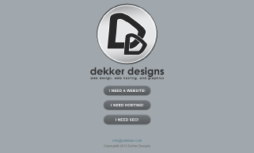
vdekker.com is a website development company; best in Edmonton. High-end (X)HTML,
CSS, and scripting for front-end development, many options for back-end
development, and professional SEO services.
Featured work:
HTML 5/CSS 3, and jQuery/scripting. Cross-browser compatible.
Cross-device compatible (Mobile friendly), and iPhone Retina
support.
Ajax-driven functionality (while still maintaining SEO), with
animations and loading indicators.
Powered by technologies: Twitter Bootstrap, Stylish-select, Form,
etc.
Meyer Homes
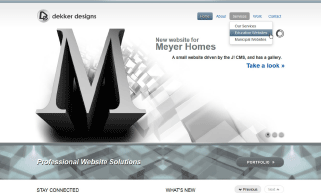
meyerhomes.com is a website for a local company doing residential home
development. CMS-driven, using Joomla; High-end (X)HTML, CSS, and scripting.
Featured work:
HTML 5/CSS 3, and jQuery/scripting. Cross-browser compatible.
Cross-device compatible (Mobile friendly), and iPhone Retina
support.
Custom Modules for News, with custom front-end slider/fading
script for navigation (Previous Next).
Powered by technologies: Twitter Bootstrap, Coda-Slider, etc.
SecWebMgmr
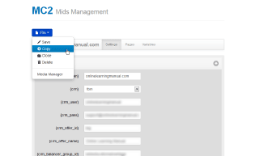
secwebmgmr.com is a powerful light-weight web
application
for managing bundles of portal websites.
The websites' content is variable-driven. Copy/re-brand entire sites
with a single click. Use a Media Manager to re-brand the logo. Etc.
Featured work:
HTML 5/CSS 3 & Cross-browser compatible.
Cross-device compatible (Mobile).
Database-driven using PHP/MySQL.
Powered by technologies such as the Twitter Bootstrap, jQuery,
etc.
Using accordion script/functionality to expand/collapse sections(pages)
of content-variables (5,000+).
themet.ca is new website for the Metropolitan Grill (in Calgary, Alberta).
Joomla, (X)HTML, CSS 3, JavaScript/jQuery scripting (e.g. Coda-Slider).
Featured work:
High-end Slicing & Styling, Semantic Markup
Absolute Footer functionality.
Web Font Embedding Custom Font Setup
Custom Module for Reserving a Table/E-mail. (before the switch
to OpenTable)
Integration of OpenTable script/service.
Facebook Integration
Rangeland Engineering
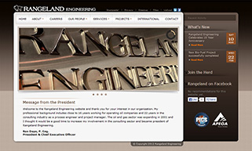
rangelandeng.com is a revamp/upgraded website (new design and back-end). Joomla, (X)HTML,
CSS 3, JavaScript/jQuery scripting (e.g. Coda-Slider).
Featured work:
High-end Slicing, Markup & Styling (from a unique design)
Sliced from a unique design (breaks rules of web design), designed
by a non-Web Designer.
Custom Setup(Styling/Design) of jQuery Slideshow plugin, Coda-slider.
Custom Module Templates(for News, etc.)
Facebook Integration
Roozzy Template
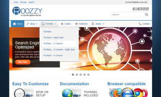
citetemplates.com is a base for all Site Templates (designed/developed
by Cite Media) to sell on ThemeForest, such as this template,
Roozzy. High-end markup, styling, and scripting; while maintaining
high level of flexibility for customers (who purchase the template)
to customize the template to fit their needs.
Featured work:
Built on a base Framework (with Custom-Generator) capable of
automatically output/publishing the work (all html files,
and assets) into a Demo package.
Integration fo many 3rd-party scripts/systems (jQuery), such
as: Accordion, Semantic-Tabs, Slideshows, etc.
(X)HTML, CSS 3, jQuery. Cross-browser compatible.
AgentShop
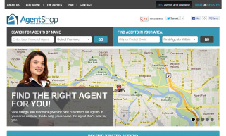
agentshop.ca is a website for reviewing (comment and rate)
real estate agents. Users can visit/browse the website, register
their own account, add agents, etc. Users can also register as an
agent (with profile) and claim their profile page(that may exist
already from being created by another user).
The beauty of this project/website is the fact (while still maintaining
SEO of all pages) that 95% of all features and functionality are
Ajax-driven (with animations, sliding effects, and loading indicators),
making browsing a quick and seamless (enjoyable) experience.
Featured work:
Semantic markup/styling (HTML 4/CSS 3).
Running on CodeIgniter 2.0 (newly released) framework, with addons/customizations
for features such as multilingual support (in an Search Engine
Optimized manner, using SEF URLs)
Powered by additional technologies (front-end scripts), such
as CodaSlider(slideshow), Tooltips, DataTables, Autocomplete,
etc.
Profile image and image-crop functionality, using JCrop.
Ajax-driven (while still maintaining SEO).
Custom back-end/administration area for managing users/agents,
profiles, and requests.
E-mail notifications (role-specific), including direct links
(within email's message) for quick-actions(Approve/Reject)
and other back-end management.
orbizo.com is an application for listing Requests, Jobs,
Tasks, Needs, Misc. from people. Major maintenance on the (X)HTML,
CSS, and JavaScript. In addition, some minor work with the PHP, and
MySQL.
Featured work:
Semantic Markup
Clean Styling
SEO and
Dynamic Meta
(a)images
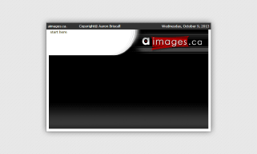
aimages.ca is a graphics design service provider. The site
was designed & developed using Photoshop, Illustrator, (X)HTML, CSS,
JavaScript, PHP, and MySQL.
instantcheckmate.com is an application for listing criminal
records of people. (X)HTML, CSS 3, JavaScript: FormValidation, Loginslider,
etc.
Featured work:
High-end Slicing, Markup & Styling
Form Validation & Scripting
CSS 3
XoeCream
xoecream.com sells rejuvenation skin cream. Maintenance
(X)HTML, CSS. In addition, some JavaScript work for error prompt/popup
interactivity.
Website Features:
CSS Absolute Positioning
Semantic Markup
Clean Styling
Superior Cash For Gold
superiorcashforgold.com gives cash for gold. Similar work
as for xoecream.com (above).
Website Features:
CSS Absolute Positioning
Semantic Markup
Clean Styling
Deal Squad
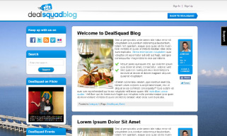
dealsquad.com is a real-time auction bidding application,
similar to quibids.com. High-end (X)HTML, CSS for all designs/pages
of the website. In addition, some JavaScript work for animations,
slideshows, etc.
Website Details:
Includes
markup & styling maintenance
Includes
custom php/mysql logic
Includes
javascript animation
Bid Tub
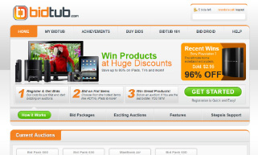
bidtub.com is a real-time auction bidding application, similar
to quibids.com. High-end (X)HTML, CSS for all designs/pages of the
website. In addition, some JavaScript work for animations, slideshows,
etc.
Featured work:
High-end Markup & Styling
Sliced & Semantic Banner/Slideshow System
Custom Javascript Scripts
LER Museum
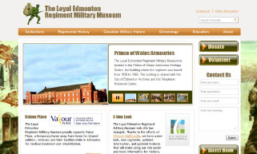
lermuseum.com
is dedicated to preserving the military heritage of the Loyal Edmonton
Regiment. Slicing, Coding, and Development of the website on Joomla
and using our standard custom template.
Featured work (Joomla):
Sub-level Menus and Articles
Semantic MP3 Player System
Custom AJAX Contact Module
Exciton Tech
excitontech.com is an Alberta advanced materials research and development company.
Slicing, Coding, and Development of the website on Joomla using our
standard custom template.
Featured work (Joomla):
Semantic Markup, Clean Styling, and SEO
Custom Module-driven Frontpage.
Drop Downs
Mindfulness Plus
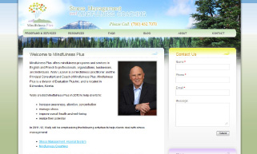
mindfulnessplus.com offers Mindfulness-based stress reduction.
Slicing, Coding, and Development of the website on Joomla and using
our standard custom template.
In 2013, the website (and branding) changed to
evaluationplus.ca.
Featured work (Joomla):
Semantic Markup, Clean Styling, and SEO
Custom AJAX Contact Module
Dropdown Menus
Natural Health Practitioners of Canada
nhpcanada.org is a Nonprofit association serving the needs of Canadian massage
practitioners and clients. Slicing, Coding, and Development of the
website on Joomla and using our standard custom template.
Featured work (Joomla):
Customized VirtueMart Shopping Cart & Ordering System
Customized Members Registration
Customized Back-end Reporting Tools
Customized Events System
Three Battles
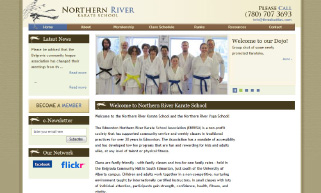
threebattles.com is the Edmonton Northern River Karate School Association. Slicing,
Coding, and Development of the website on Joomla and using our standard
custom template.
Featured work (Joomla):
Semantic Markup, Clean Styling, and SEO
Sliced & Semantic Banner/Slideshow System
Dropdown Menus
LECDEA
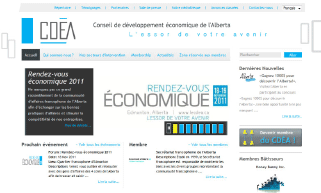
lecdea.ca is a French organization that helps other French organizations settle
in and find their way in Canada. Slicing, Coding, and Development
of the website on Joomla and using our standard custom template.
Featured work (Joomla):
Custom Multilingual Functionality
Language-specific SEO URLs
Custom Registration
Evan Briscall
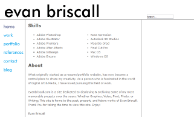
evanbriscall.com is a portfolio website for Evan Briscall, a highly qualified designer.
Slicing, Coding, and Development of the website on Joomla using a
new custom template.
Featured work (Joomla):
Semantic Markup, Clean Styling, and SEO
Custom Module-driven Portfolio.
Custom back-end modifications.
Suntouched
suntouched.ca
offers Bowen Technique, massage, and Raindrop aromatherapy treatments.
Slicing, Coding, and Development of the website on Joomla and using
our standard custom template.
Featured work (Joomla):
Semantic Markup, Clean Styling, and SEO
Dropdown Menus
Okelu
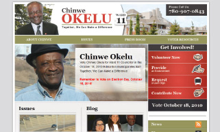
okelu.com
a website that represents the Ward 11 candidate, Chinwe Okelu, for
the Edmonton municipal election. Slicing, Coding, and Development
of the website on Joomla and using our standard custom template.
Featured work (Joomla):
Semantic Markup, Clean Styling, and SEO
Custom Modules: Latest Issues, and Latest Blog
Dropdown Menus
Edmonton Symphony
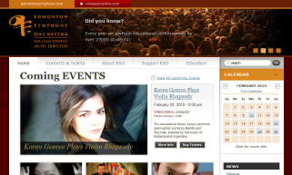
edmontonsymphony.com &
winspearcentre.com duo website project, running on Joomla CMS with several customizations
and enhancements. (X)HTML, CSS, JavaScript, Ajax, PHP/MySQL, etc.
Featured work:
High-end slicing, markup & styling of website and seatmap.
Inegration of Google Blogger components as Joomla modules.
Custom bridge connection/feature (within Joomla) between both
websites to handle double logins, and double publishing (and
site-specific publishing/unpublishing) of new pages and events.
Award: 1st place winner of Top 10 Orchestra Websites in
Canada, and 3rd place winner (of Top 10) in all of Northern America.
lazaruklaw.com is an Edmonton based law firm focusing on personal injury & family
law. Slicing, Coding, and Development of the website on Joomla and
using our standard custom template.